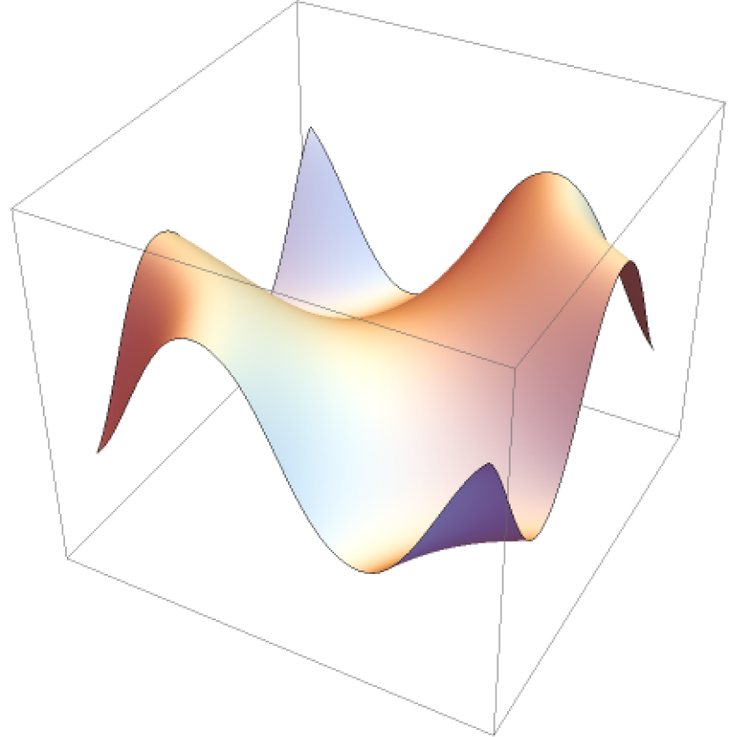

01- Machine Design: Three Stage Gear Reducer
Challenge
: Design a gear reducer transmission to meet specifications
while being safe and cost effective.
Input speed: 3000 rpm | Power: 60 kW | Minimum Factor of Safety:
1.1 | Output speed: 400 +/- 4 rpm
Shaft Design
I used stress analysis and the modified Goodman criterion for
fatigue failure to determine the required shaft parameters.
The biggest challenge I faced was tuning the shaft parameters to
achieve a reasonable factor of safety while also being able to
use the most cost-effective material and heat treatment.
Calculated
-
Bearing reactions
-
Principles stresses
-
Von Mises stress
Determined
-
Shaft diameter: 50mm
-
Yield strength: 345 MPa (AISI 1030)
-
Material hardness: 345 HB (case hardened)
Achieved
-
Shaft Factor of safety of 2.6
Gear Design
I used the AGMA approach to determine the allowable bending and
contact stresses for the gear and pinion.
Choosing the optimal material and geometry was difficult. I made
an algorithm to calculate the factors of safety so that I could
test different combinations of gear parameters.
Gear Design
I determined the bearing load ratings using the shaft loads,
bearing reactions, and L10 life, and then selected the bearing
with the minimum acceptable load ratings from the SKF catalog for
single-row deep-groove ball bearings.
Calculated
-
Shaft loads
-
Bearing reactions
-
L10 life
Determined
-
Basic load rating
-
Static load rating
Selected
-
SKF 6405 deep-groove ball bearings
What I learned:
Designing machine elements is an iterative process and basic
specifications only go so far. A well designed machine element
should take into account manufacturability and maintainability
in addition to failure analysis.
03- Peristomal Skin Sensor
Background
The Design Process
Hollister Inc.
is a medical device company that specializes in ostomy and
continence care products. Their R&D engineers challenged my
design team to come up with a surface deformation sensor that
can be used to improve their products.

We used Ulrich and Eppinger’s Product Design and Development
process to guide us through the 6-month long project.
Research and Prototyping
Result

I created a mathematical model which predicts bending stress and
strain from sensor voltage.
I designed, assembled and programmed all of the electronics for
the project using an Arduino and other integrated circuits.
The prototype used contact sensors to measure the bend angle of
discrete locations on the surface in order to predict surface
deformation and in-plane stresses and strains. Two provisional
patents were submitted for the work the team did on the project.
02- DFMA: The Bionic Wrench
Challenge
: Reverse engineer Prof. Dan Brown’s Bionic Wrench, design a
manufacturing assembly process for it, then create tools and
fixtures for a prototype assembly line.
I analyzed each part of the Bionic Wrench to learn about its
function in the design.
Understanding the design was crucial in choosing manufacturing
tolerances.
I created toleranced drawings and used them to determine that
stamping is the best manufacturing process for creating the plates
of the wrench.
Reverse Engineering
Assembly Process Design
I experimented with assembling the wrench and created a journey map
of how it could be assembled in manufacturing.
Then I designed and CNC milled riveting fixtures for assembling the
wrench, and created a line-balanced assembly process and SOP.
RESULT
: Prototype line flow time of 2 minutes for an assembled and
packaged wrench.
Contact
Linkedin
Github
Email